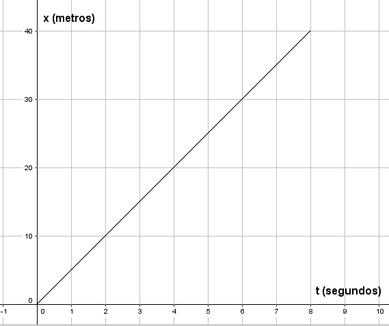
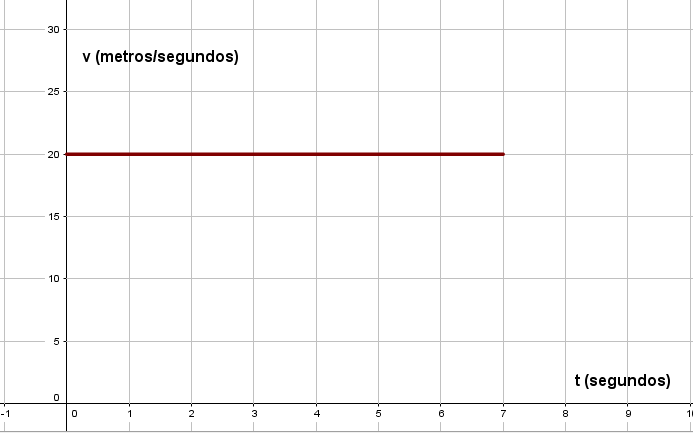

Movimiento Rectilíneo
MRU
Cuerpo que se mueve en línea recta con una velocidad uniforme

Recorre distancias iguales en tiempos iguales
Ley de posiciones
$$d = d_{0} + vt$$
Donde:
$$d = \ distancia\ final$$ $$d_{0} = \ distancia\ inicial$$ $$v = \ velocidad$$ $$t = \ tiempo$$
Gráfica Posición-Tiempo

Gráfica Velocidad-tiempo

Un móvil viaja describiendo un M.R.U. y por cada 2 segundos avanza 5 metros.
a)Realizar una gráfica
d-t en donde el móvil parta del origen y otra v-t calculando el área
b)Debajo de la gráfica para
obtener la distancia recorrida para un intervalo de 0-10 segundos.
Aceleración
Cantidad vectorial que describe el cambio de velocidad con respecto al tiempo
$$aceleración = \frac{{cambio \ de \ velocidad}}{{intervalo \ de \ tiempo}}$$ $$a = \frac{v_{f} -
v_{i}}{t}$$
Un automóvil en una carretera recta acelera de 2.18m/s a 16.66m/s en 8.0s ¿Cuál es el valor de
aceleración en dicho intervalo?
Aceleración media e instantánea
$$a_{med - x} = \frac{v_{2x} - v_{1x}}{t_{2} - t_{1}} = \frac{v_{x}}{t}$$ $$a_{x} =
\operatorname{}{\frac{v_{x}}{t} = \frac{dv_{x}}{\text{dt}}}$$
MRUA
Movimiento donde la velocidad experimenta cambios iguales en cada unidad de tiempo, pero con aceleración
constante
$$a = \frac{v_{f} - v_{i}}{t}$$ $$a = \frac{v_{f}^{2} -
v_{i}^{2}}{2d}$$
$$d = \left( \frac{v_{i} + v_{f}}{2} \right)t$$ $$d = v_{i}t + \frac{1}{2}at^{2}$$
Ley de velocidades:
$$v = v_{0} + at$$
Aceleración media:
$$a_{m} = \frac{v}{t} = \frac{v - v_{0}}{t - t_{0}}$$
Ley de posiciones:
$$d = d_{0} + v_{0}t + \frac{1}{2}at^{2}$$
Velocidad y desplazamiento:
$$v^{2} = v_{0}^{2} + 2ad$$ $$d = \left( \frac{v + v_{0}}{2} \right)t$$
Un automóvil de carreras partió del reposo con una aceleración de $$6 m/s^{2}$$ ¿Cuál será el valor de su
velocidad (rapidez) después de 10s? El automóvil se mueve en una carretera recta
Caída libre
Movimiento que describe un cuerpo que se mueve a partir del reposo bajo la acción de la gravedad
$$g = 9.8\frac{m}{s^{2}}$$
Considerando la resistencia del aire como despreciable
Tiro vertical
Movimiento que describe un cuerpo al ser lanzado verticalmente hacia arriba
El tiempo que tarda en subir, será el mismo que ocupe en bajar al mismo punto, igual que las velocidades
$$v_{f} = v_{0} + gt$$ $$h = v_{0}t + \frac{1}{2}gt^{2}$$ $$v_{f}^{2} = v_{0}^{2} + 2gh$$
Una persona se cae de una tabla que cruza por encima de un arroyo y golpea el agua 1.2s después ¿Cuál es la altura de la tabla sobre el arroyo?